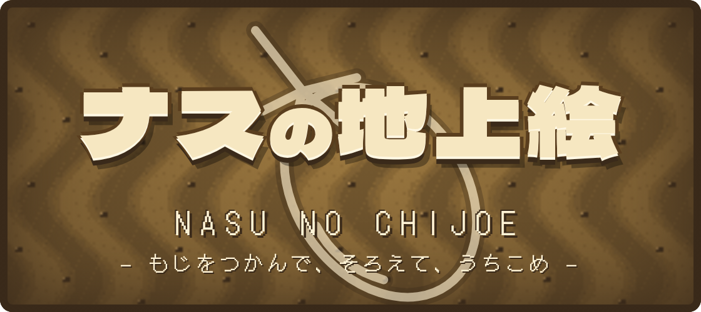

ナスの地上絵
パイロット版SCORE 0残機 ▲▲▲

移動：なぞる／マウス／矢印・WASD 通常弾：自動
地上弾・つかむ（照準の1マス）：タップ／クリック／N・M を1回押す。つかんだ文字はもう1回で はなす
2回すばやく押す：出てきた物を撃ち出す
Enter・Space でスタート
MUKKIIALL RIGHTS RESERVED
声：VOICEVOX:春日部つむぎ・青山龍星 音楽・効果音：魔王魂
絵文字：Twemoji（CC-BY 4.0） 機体・地形：Kenney（CC0）
声：VOICEVOX:春日部つむぎ・青山龍星 音楽・効果音：魔王魂
絵文字：Twemoji（CC-BY 4.0） 機体・地形：Kenney（CC0）
設定
変えた数値はこの端末に残る。プレイ中に開くと一時停止する。キーボードは C で開閉
空の敵は通常弾、地上は地上弾